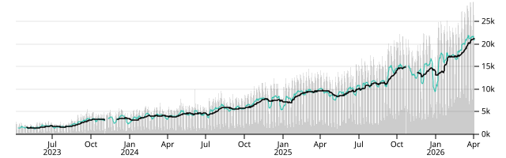

Observable Plot
Observable Plot is a free, open-source, JavaScript library for visualizing tabular data, focused on accelerating exploratory data analysis. It has a concise, memorable, yet expressive API, featuring scales and layered marks in the grammar of graphics style.

</a>
Daily downloads of Observable Plot · oss-analytics
Documentation 📚
https://observablehq.com/plot/
Examples 🖼️
https://observablehq.com/@observablehq/plot-gallery
Releases 🚀
See our CHANGELOG and summary release notes.
Getting help 🏠
See our community guide.
Contributing 🙏
See CONTRIBUTING.md.